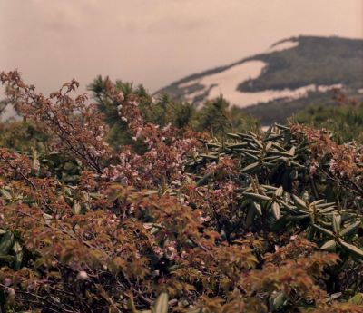

My Trip to Japan
One of my favorite photography experiences was capturing temples, bridges, and street life throughout Japan. The mix of modern city lights and historic shrines created amazing contrasts.

One of my favorite photography experiences was capturing temples, bridges, and street life throughout Japan. The mix of modern city lights and historic shrines created amazing contrasts.
Whether it’s fall leaves, mountain trails, or hidden climbing spots, outdoor photography lets me capture moments that feel timeless.